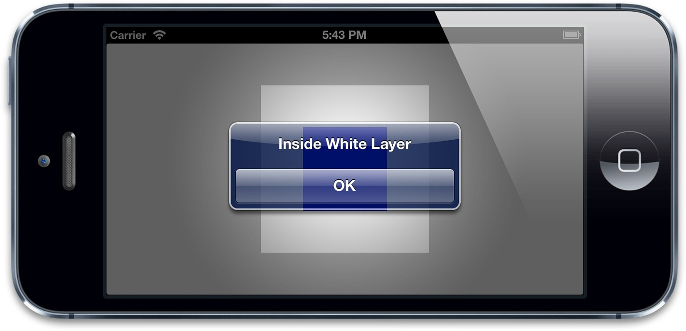

第一章“图层树”证实了最好使用图层相关视图，而不是创建独立的图层关系。其中一个原因就是要处理额外复杂的触摸事件。
CALayer并不关心任何响应链事件，所以不能直接处理触摸事件或者手势。但是它有一系列的方法帮你处理事件：-containsPoint:和-hitTest:。
-containsPoint:接受一个在本图层坐标系下的CGPoint，如果这个点在图层frame范围内就返回YES。如清单3.4所示第一章的项目的另一个合适的版本，也就是使用-containsPoint:方法来判断到底是白色还是蓝色的图层被触摸了
（图3.10）。这需要把触摸坐标转换成每个图层坐标系下的坐标，结果很不方便。
清单3.4 使用containsPoint判断被点击的图层
@interface ViewController ()
@property (nonatomic, weak) IBOutlet UIView *layerView;
@property (nonatomic, weak) CALayer *blueLayer;
@end
@implementation ViewController
- (void)viewDidLoad
{
[super viewDidLoad];
//create sublayer
self.blueLayer = [CALayer layer];
self.blueLayer.frame = CGRectMake(50.0f, 50.0f, 100.0f, 100.0f);
self.blueLayer.backgroundColor = [UIColor blueColor].CGColor;
//add it to our view
[self.layerView.layer addSublayer:self.blueLayer];
}
- (void)touchesBegan:(NSSet *)touches withEvent:(UIEvent *)event
{
//get touch position relative to main view
CGPoint point = [[touches anyObject] locationInView:self.view];
//convert point to the white layer's coordinates
point = [self.layerView.layer convertPoint:point fromLayer:self.view.layer];
//get layer using containsPoint:
if ([self.layerView.layer containsPoint:point]) {
//convert point to blueLayer’s coordinates
point = [self.blueLayer convertPoint:point fromLayer:self.layerView.layer];
if ([self.blueLayer containsPoint:point]) {
[[[UIAlertView alloc] initWithTitle:@"Inside Blue Layer"
message:nil
delegate:nil
cancelButtonTitle:@"OK"
otherButtonTitles:nil] show];
} else {
[[[UIAlertView alloc] initWithTitle:@"Inside White Layer"
message:nil
delegate:nil
cancelButtonTitle:@"OK"
otherButtonTitles:nil] show];
}
}
}
@end

图3.10 点击图层被正确标识
-hitTest:方法同样接受一个CGPoint类型参数，而不是BOOL类型，它返回图层本身，或者包含这个坐标点的叶子节点图层。这意味着不再需要像使用-containsPoint:那样，人工地在每个子图层变换或者测试点击的坐标。如果这个点在最外面图层的范围之外，则返回nil。具体使用-hitTest:方法被点击图层的代码如清单3.5所示。
清单3.5 使用hitTest判断被点击的图层
- (void)touchesBegan:(NSSet *)touches withEvent:(UIEvent *)event
{
//get touch position
CGPoint point = [[touches anyObject] locationInView:self.view];
//get touched layer
CALayer *layer = [self.layerView.layer hitTest:point];
//get layer using hitTest
if (layer == self.blueLayer) {
[[[UIAlertView alloc] initWithTitle:@"Inside Blue Layer"
message:nil
delegate:nil
cancelButtonTitle:@"OK"
otherButtonTitles:nil] show];
} else if (layer == self.layerView.layer) {
[[[UIAlertView alloc] initWithTitle:@"Inside White Layer"
message:nil
delegate:nil
cancelButtonTitle:@"OK"
otherButtonTitles:nil] show];
}
}
注意当调用图层的-hitTest:方法时，测算的顺序严格依赖于图层树当中的图层顺序（和UIView处理事件类似）。之前提到的zPosition属性可以明显改变屏幕上图层的顺序，但不能改变事件传递的顺序。
这意味着如果改变了图层的z轴顺序，你会发现将不能够检测到最前方的视图点击事件，这是因为被另一个图层遮盖住了，虽然它的zPosition值较小，但是在图层树中的顺序靠前。我们将在第五章详细讨论这个问题。